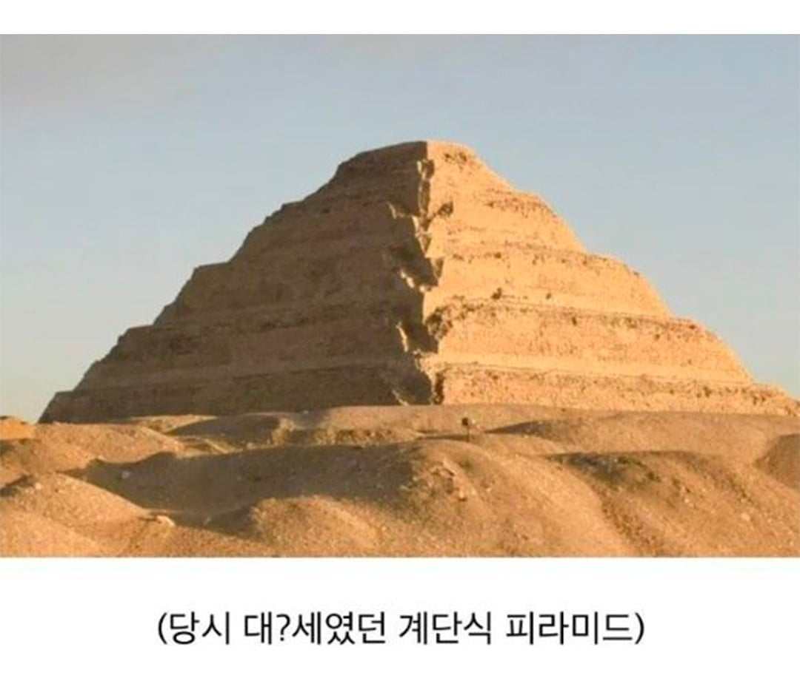
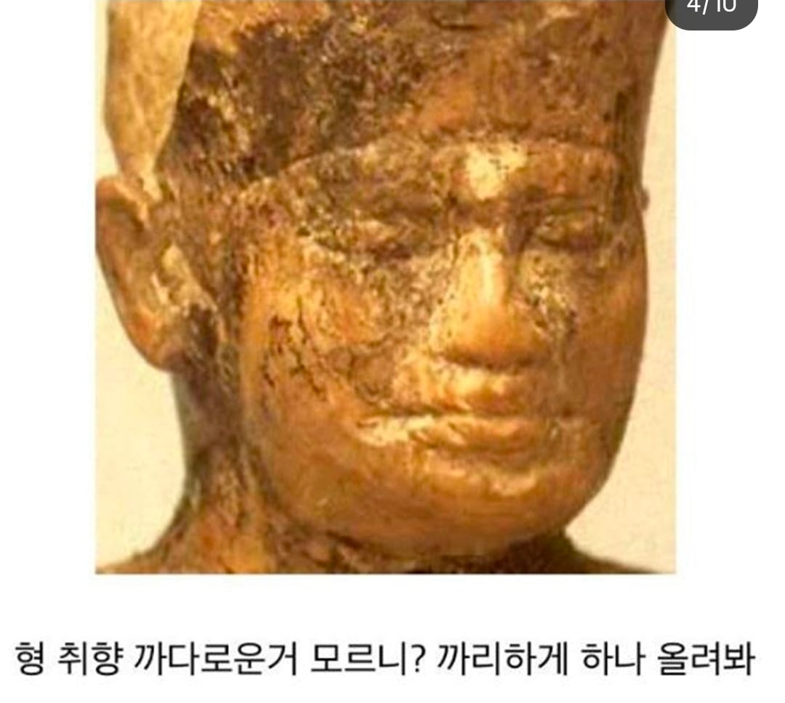
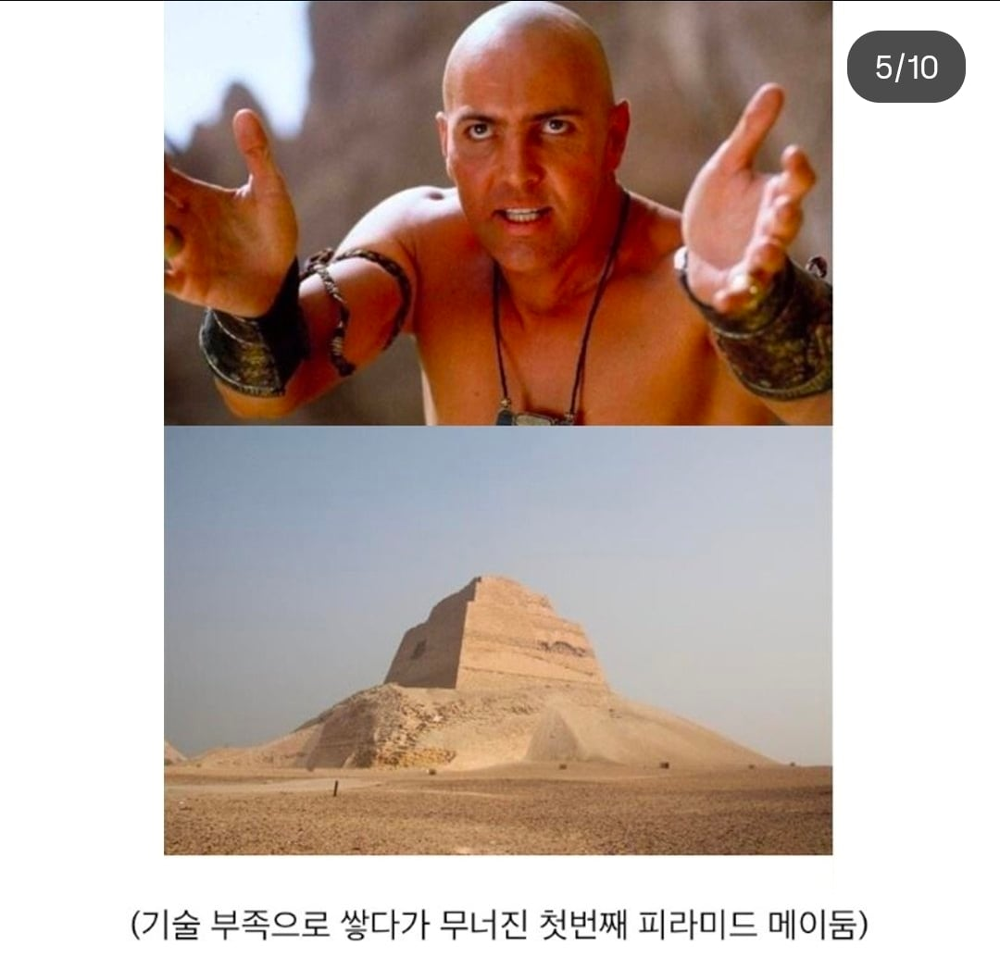
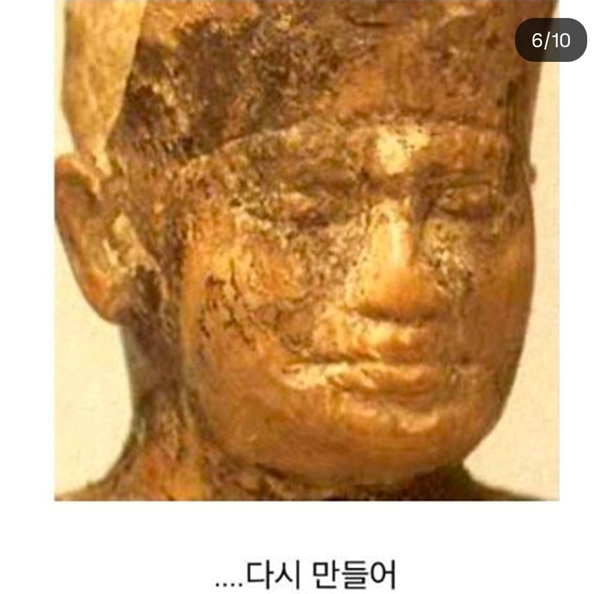
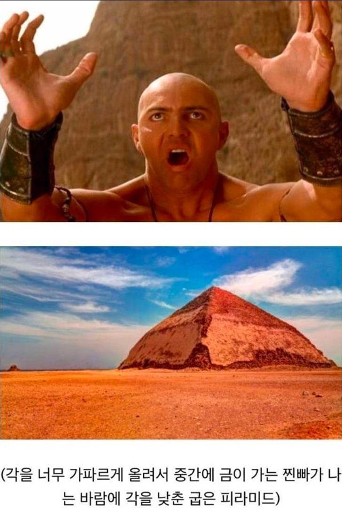
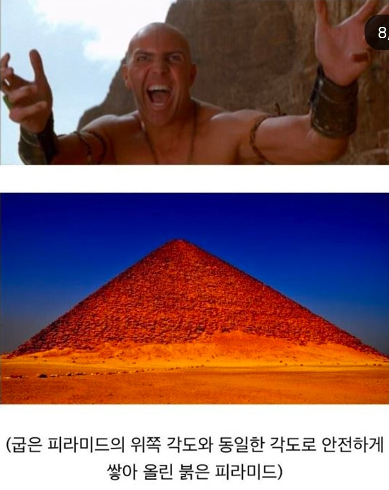

외계인👽 이 미친새끼들 숨기려고 저것까지 만들었구나
흡족에서 터졌넼ㅋㅋㅋㅋㅋㅋㅋ
ㅋㅋㅋㅋㅋㅋ
당시 기술력으로 15년 밖에 안 걸린다는게 놀라운데
저게 뉴딜사업 비슷한 거라 애들 안 굶겨 죽이는 역할을 하기도 했다고 그러더라
나일강덕에 유럽의 식량창고로 불릴 정도로 식량이 넘쳐났던 이집트여서 가능했던 정책이긴 함. 나일강 주변이 워낙 비옥해서 수확기에는 엄청난 식량을 얻지만, 나일강이 넘치는 기간동안에는 아무것도 못하는 상황이 생기기 때문에 그 기간동안 놀게될 국민들에게 일을 시켜서 넘쳐나는 식량을 합리적인 이유로 배분할 수 있도록 하는 시스템이었음.
되게 합리적인 이유로 지은 거였구나;;
노예x강제x
노동자들 기록에 맥주 쳐먹고 숙취때문에 출근못했다는 기록도 있다고함ㅋㅋㅋ
그래서 건설노동자들이 숙취가 심해서 일못하겠다고 개기는것도 가능했지ㅋㅋ
그리고 사실 이런 아무런 이유도 의미도 없는 낭비(여기선 피라미드 그 자체의 목적이나 존재의미에 대해서)가 인간 사회를 굴러가게 하는 원동력이기도 하지.
뭐 현대인 시점에선 아무런 의미도 없는 낭비였지만 당시 이집트인들로선 사후세계에 대비하는게 조선시대의 제삿상 만큼이나 중요한거긴 했으니까. 조선시대 가서 제삿상 보고 그거 쓸데없는거 왜해요 그러면 맞아죽는것처럼..
다만 사후대비하는 김에 식량도 풀겸 스케일 크게 가보자에 가깝긴하지
그리고 미래인 시점에서 현대인을 봐도 또한 그렇다는 거지 뭐. "20세기 사람들은 먹지도 못 할 이상한 물건을 만드는데 엄청난 자원을 소모했다. 예컨데 동전과 지폐같은."
그것보단 걍 사치재에 비유하는게 맞제
시발 저 즈태이 짤은 봐도 봐도 터지네 ㅋㅋㅋㅋㅋㅋ
흡족은 또 처음보네
그럼... 통치를 45년 했다는 건데... 이게 더 쩌네 ㅋㅋㅋㅋ
쟤넨 일단 파라오 되면 바로 무덤 짓기 들어가나보네ㅋㅋㅋ
아 나 그냥 이집트 사람이어서 이모텝 짤 쓴 줄 알았는데 원조 이모텝이 건축가여서 쓴거였네 ㅋㅋㅋㅋ
이름은 이모템 직업은 건축가
포트폴리오는 "피라미든 건설만 45년 경력"
"예? 뭘 만들라구요?"
외계인 : 이렇게 발전 과정 처럼 보이는 디자인을 몇개 해두면 외계인이 만들었다고 눈치 못채겠지? ㅋㅋㅋㅋㅋ
스네루프 다라이가 꼭 한국사람 같은데? 초등학교 때 반에 김형문이라고 있었는데 똑 닮았네
외계인이 아니라 이모텝이 마법으로 지었네
흡족
이걸요?
저 파라오 덕분에 피라미드가 외계인이 지은거란 소리가 쏙 들어감 ㅋㅋㅋ